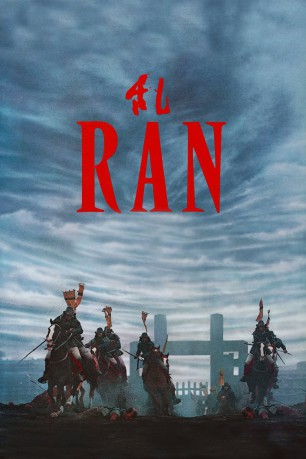

#8807 Ran
Auszeichnungen: 1 Oscars gewonnen für 3 Oscars nominiert 2 BAFTA-Awards gewonnen
 
 IMDB-Wertung: 8.2 / 10
IMDB-Wertung: 8.2 / 10  IMDB-TOP-Platzierung: 136
IMDB-TOP-Platzierung: 136  Tomatometer: 96
Tomatometer: 96  Metascore: 0
Metascore: 0 
Nach langen Jahren der Regentschaft beschließt Fürst Hidetora, sich zurückzuziehen. Sein riesiges Reich teilt er unter seinen drei Söhnen auf. Doch schon bald treiben Machtgier und Jähzorn die Brüder in gegenseitige Feindschaft und ein blutiger Krieg bricht aus, der das Reich für immer zu zerbrechen droht...
Jahr: 1985
Dauer: 160 Minuten
FSK: 12
Land: Japan Studio: Neue Constantin FilmTonspuren:
Untertitel:
Auflösung: 1080p (1920x1040) Größe: 12288 MB
Genre: Action, Drama
Regisseur:  Akira Kurosawa
Akira Kurosawa
Drehbuch: Akira Kurosawa
Soundtrack: Tôru Takemitsu
Darsteller:
 Tatsuya Nakadai als Lord Hidetora Ichimonji
Tatsuya Nakadai als Lord Hidetora Ichimonji- Jinpachi Nezu als Jiro Masatora Ichimonji
- Mieko Harada als Lady Kaede
- Hisashi Igawa als Shuri Kurogane
- Pîtâ als Kyoami
- Yûichi Hibi als
- Akira Terao als Taro Takatora Ichimonji
- Daisuke Ryû als Saburo Naotora Ichimonji
- Yoshiko Miyazaki als Lady Sue
- Masayuki Yui als Tango Hirayama
- Kazuo Katô als Kageyu Ikoma
- Norio Matsui als Shumenosuke Ogura
- Toshiya Ito als Mondo Naganuma
- Kenji Kodama als Samon Shirane
- Takashi Watanabe als
- Mansai Nomura als Tsurumaru
- Takeshi Katô als Koyata Hatakeyama
- Jun Tazaki als Seiji Ayabe
- Hitoshi Ueki als Nobuhiro Fujimaki
- Takao Zushi als
- Yoshitaka Zushi als
- Tetsuo Yamashita als
- Akihiko Sugizaki als
- Masaaki Sasaki als
- Yoshimitsu Yamaguchi als
- Masuo Amada als
- Masaru Sakurai als
- Sakae Kimura als
- Ryûjirô Oki als
- Hanbei Kawai als
- Ryo Nagasawa als
- Seizô Katô als Koyata Hatakeyama
- Tokie Kanda als Sue's lady in waiting (uncredited)
- Sawako Kochi als Hidetora's concubine (uncredited)
- Reiko Nanjo als Hidetora's concubine (uncredited)
- Kumeko Otowa als Sue's lady in waiting (uncredited)
- Heihachiro Suzuki als Fujimaki's General (uncredited)
- Susumu Terajima als Foot soldier (uncredited)
- Haruko Tôgô als Kaede's lady in waiting (uncredited)
Datei: X:\HD-Eastern-Classic(N-Z)\Ran (1985, FSK12, 1920x1040).mkv seit 30.04.2018
Festplatte: HD Eastern+Western
 Es gibt insgesamt 61 Filme in der Gruppe 'HD-Eastern-Classic(N-Z)'
Es gibt insgesamt 61 Filme in der Gruppe 'HD-Eastern-Classic(N-Z)'